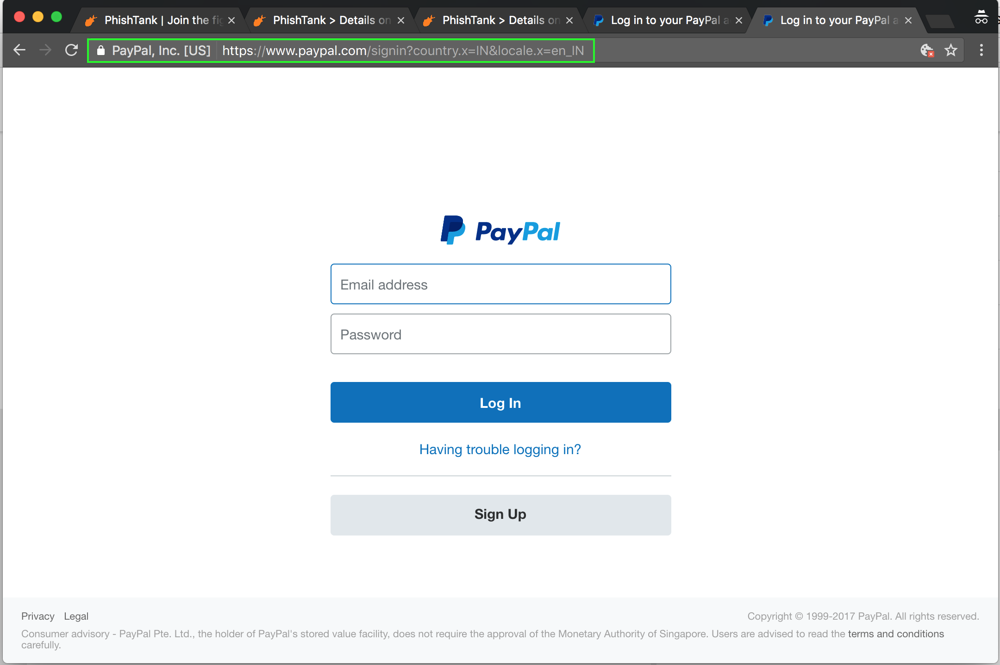
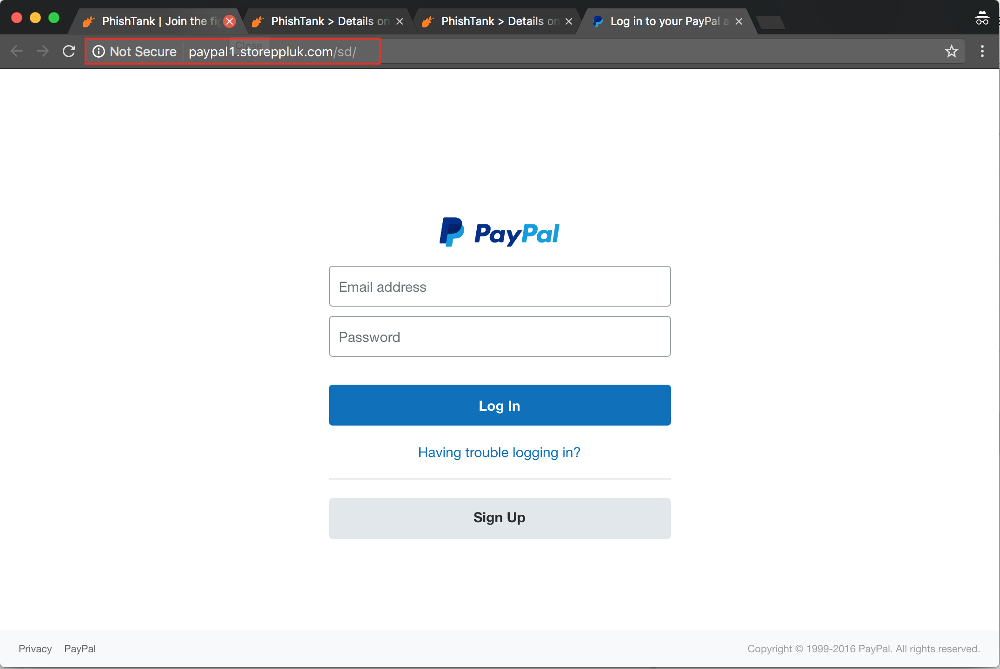
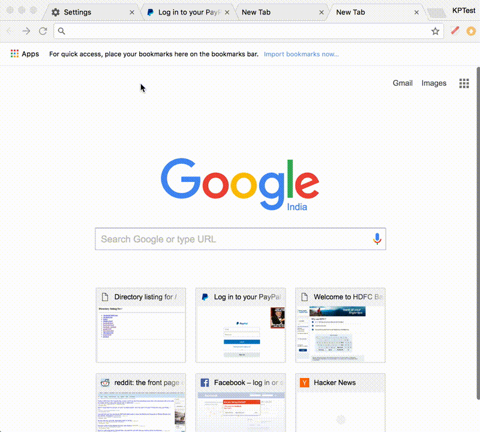
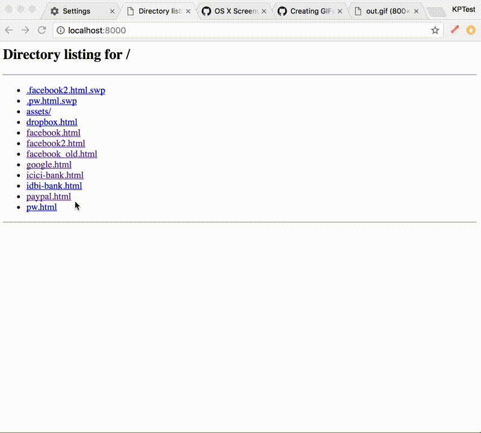

We propose a new anti-phishing technique based on creating large visual differences between legitimate sites and phishing pages which attempt to mimic them.
Attackers can automatically create thousands of customized phishing emails, domains and pages which, being newly minted, evade the browser's blacklist-based phishing protection. High-value individuals and employees of sensitive organizations are especially vulnerable to such zero-day phishing attacks.
We increase the contrast in user experience between browsing a genuine page versus an imitation page in the following manner:
Our approach can thus effectively protect against zero-day phishing, which would not be caught by a blacklist-based system. It is implemented as a browser plugin.
Phishing is an attack on the vulnerabilities of the human cognitive system, rather than an attack on the vulnerabilities of software. Consider the task of navigating a computer interface to access protected resources like email, social networking and bank accounts through the lens of Daniel Kahneman's model of human thought processes: System 1 and System 2.
System 1 is subconscious, effortless, intuitive, emotional. It is responsible for activies like recognizing faces, expressions, and walking around a room without bumping into things. System 2 is effortful, slow, consciously allocates attention to process complex situations, like writing an email or multiplying large numbers.
When System 1 gets confused or surprised, it escalates the matter to System 2, which then allocates attention to the event and formulates a response.
A cardinal rule of UX design is that the user's System 1 should effortlessly parse the user interface landscape and navigate common workflows, and involve System 2 if and only if necessary. Frequent interruptions hitting System 2 are a sign of poor design. It leads to the expenditure of scarce attention on low-level details, for example on figuring out the formatting toolbar, rather than concentrating on the higher level task of what to write. But if System 2 is not involved when needed, the user's System 1 may OK and I Agree its way into triggering irrevocable actions like deleting files without the user really intending to do so.
In addition to large warnings and red buttons, some UIs deliberately place speedbumps before destructive activities which cannot be automatically driven through by System 1, but require proof of System 2's acquiescence. For example, Github asks the user to type the name of the project before permanent deletion.
For most people, login dialogs are largely handled by System 1. If the page passes System 1's visual sniff test, recognizing a familiar logo and page layout, it will enter the username and password almost automatically, while System 2 is already thinking ahead about the email to be written, or the bank transaction to be carried out.
This phenomenon is made worse by factors like the following:
Most browsers include effective blacklist-based anti-phishing measures. However, it is easy for attackers to automatically create thousands of personalized zero-day phishing emails, domains and pages which have never been seen before, and are thus not on any blacklist. Employees and contractors of governments, banks, public utilities and other sensitive organizations are especially at risk from such targeted zero-day "spearphishing" attacks.
Our approach is inspired by the paper The Future of Ad Blocking by Storey et al, which introduces a novel perceptual ad blocking technique. It ignores HTML markup and blacklists and uses lightweight computer vision techniques to "see" the page like a human and recognize features of the ad (like the AdChoices icon) which must be present for regulatory purposes.
We observe that the same constraint holds for phishing - HTML markup may be obfuscated, blacklists may be thwarted, but at the end of the day, the rendered phishing page must look, in human eyes, very similar to the page it imitates. Thus, it can be identified by computer vision techniques.
We propose a whitelist-based anti-phishing technique, which creates a large perceptual difference between a genuine login page and a phishing page, such that even the System 1 of users who are browsing while cognitively impaired can instantly tell that something is wrong when they navigate to a phishing page.
Normally, the perceptual difference between the real page and the phishing page is very small.
 
We increase this difference in two ways:
 Actual Paypal login, green flag
 Paypal Phish, red flag
These methods are independent of each other. However, using them together is much more effective than either one alone, as it maximizes the perceptual difference between the two cases, and makes up for limitations and false negatives.
Both approaches need a whitelist. The plugin ships with a default list of the most popular phishing targets - Google, Amazon, Apple, Facebook, Paypal, etc. There are a long tail of banking and other corporate sites which can be added by the user.
While there are hundreds of thousands of sites which may be potential phishing targets, any given user probably uses less than a hundred, of which perhaps a dozen or two would contain personal or financial information which need serious protection.
Each whitelist entry contains the following information:
During the plugin configuration, the user supplies a private image known only to himself or herself, to be displayed whenever they navigate to a legitimate whitelisted login URL. This image is displayed in a modal popup sized and positioned at the center of the viewport for a few seconds before automatically retreating to the top right of the screen.
The image should be of a nature that its absence would be noticed by System 1. To this end, we suggest the following guidelines to select a guard image which should be visually as well as emotionally salient:
This is similar to SiteKey, which has been reported to be fairly ineffective, as people happily enter credentials even on sites which don't display their personal image.
We suggest that the failure of SiteKey-like schemes is because they did not create a strong enough impression on System 1 that their absence was noted. Pictures were typically small and of little personal significance.
Moreover, SiteKey is implemented on the server side, and personal images are vulnerable to being recovered by spearphishers. A proliferation of different images on different sites leads to desensitization.
We suggest that associating a single emotionally salient and rewarding image at the client side, across all protected login pages, will result in System 1 being conditioned (not unlike Pavlov's dog) to expect the image and feel "cheated" by its absence, escalating the matter to System 2.
The green flag has negligible performance impact, as no image processing or DOM processing is involved - we just check the URL to see if it belongs in the whitelist and do our song-and-dance routine.
To implement red-flagging of suspect pages, we need to identify whether the page loaded on the currently active browser tab is perceptually similar to the login pages of protected sites.
This can be done in several ways. The simplest would be to follow the lead of the perceptual ad blocking plugin and check all image-like elements (divs with backgrounds, img elements and svg elements) against a list of logo/image snippets of each protected site using perceptual hashes. While this approach would work in a majority of cases, as phishers tend to be copy original pages as far as possible, it has two drawbacks:
We feel that the only robust method is to take the principle of perceptual matching to its logical conclusion: take a screenshot of the active tab every few seconds, which gives us an image of the rendered page as seen by the user. We search the screenshot for the presence of image snippets from the login page of every protected site.
We have tried different algorithms to empirically figure out the performance vs accuracy tradeoff.
(ADD: chart of different algorithms)
Currently we use ORB as implemented in JSFeat.
TODO: Explore deep learning approaches as an alternative to computer vision algorithms. PhishTank samples show that a significant percentage of phishing pages mimic the color scheme, look and feel, but use entirely different page layouts, different icons from the original. Deep learning based image classification might do better to recognize these than straight-up feature matching against the real site. Most existing deep learning models use real world images as training data. So just retraining Inception, for instance, with webpage screenshots does not work very well. A different model may be called for. The CPU requirements are also likely to price machine learning off the browser and into a central service.
Red-flagging is resource intensive and can potentially cause enough of a UX, performance hit and/or battery usage to be practically infeasible. In mitigation,
cognitive cost, programming cost, maintenance cost
Both green and red flag methods have limitations and attacks which can reduce their effectiveness. This is why it is important to use both.